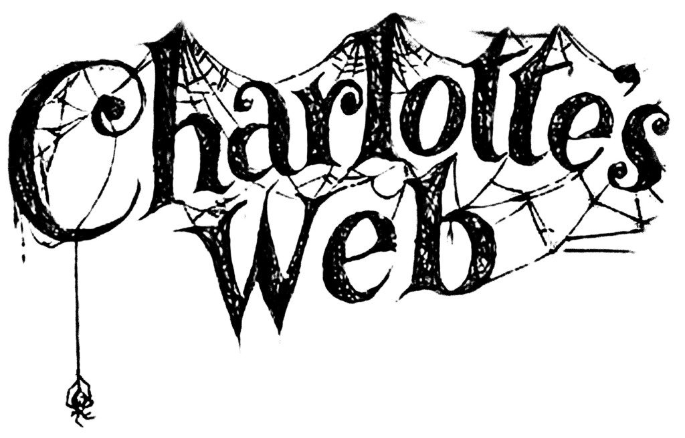

As the wind blows through the desolate trees and all that can be heard is the falling of the leaves;
Here in the forest, dark and deep, take a few chances because you have miles to go
and a ray of hope is all I can show.
The sun will set soon and you're running out of time. The web is getting bigger by the minute
and you'll be trapped in it and no one will know.
UNLESS.
You take a step to save yourself.
Let me guide you. Just solve these simple puzzles one at a time and unlock
new stages that will get you closer to your way out. It's not that hard but you have
to be quick.
So put your thinking cap on and get going BEFORE IT'S TOO LATE.